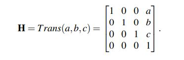
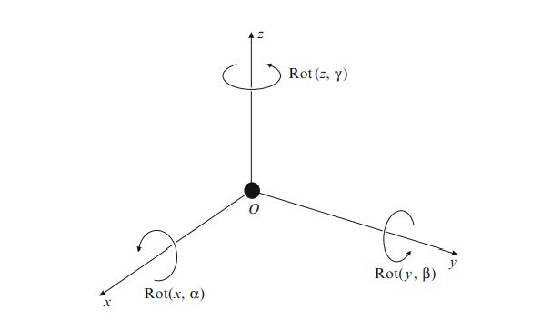
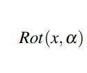
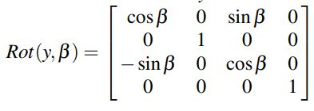
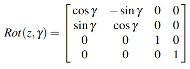
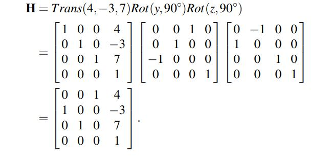
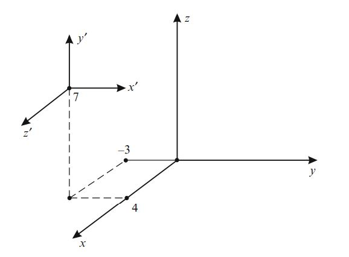

Living With Robots
February, 2021
Introduction
Robots have been in part of manufacturing since the early 1960s. Since then, they have only increased their presence in our society and
manufacturing industries. They are starting to become more prevalent in our everyday lives; from serving coffee to staffing warehouses.
People may be worried that robots may end up taking their jobs, however, trying to understand robots and their designs and capabilities
may reduce those fears.
They are also advancing even further in technologies such as artificial intelligence and machine learning. These technologies allow
for smart features of the capabilities of the robots. Before the robots can be smart and use artificial intelligence, it must know the
position of the end effector of the manipulator (the end of the robot arm), to know exactly where in space, the action part of the robot
is. For example, if the robot is welding the location of the tip of the welder needs to be known so the calculations of the future path
it takes can be performed. For something like welding other parameters need to be known as well, such as temperature of the workpiece so
the speed and location can be calculated precisely. There are many complicated robots that are beyond the scope of this paper.
Methods
Translation Transformation
In robotics there are translational and rotational joints. They are represented by translation and rotational displacements.
(Bajd et al., 2010) The homogenous translation matrix can be represented by the following.

Figure 1 Translation Matrix (Bajd et al., 2010)
This can be used to calculate the position of the end effector after it has been translated in a linear motion.
It is very useful to be able to use this in a real work application because it is important to know where the end effector
of the robot is to be able to do the action that the robot is required to do. Translation matrix is multiplied by the rotation
matrix to get the position of the end effector. If the position of the base of the new coordinate system is translated away from
the origin coordinate system you take that vector and multiply it by the rotation matrix depending on what axis it is rotated by.
Rotational Transformation
To perform a rotational transformation around an axis a rotation matrix is used. Each of the axis have their own rotational
matrix that can be applied to solving the problem. This is important to be able to know what axis the manipulator is being rotated
by. Once this is known then the calculations can be done to find the position of the end effector. The coordinate system is represented
by the figure below. The direction it is rotated is by the right-hand rule which is also represented in the figure below.
(Bajd et al., 2010)

Figure 2 Right-Hand rectangular position rotations (Bajd et al., 2010)
Once the axis of rotation is known the rotation matrix of the given axis can be taken and multiplied by the translation matrix.
The rotation matrix is represented for each axis below.

 Figure 3 Rotation matrix, X-axis (Bajd et al., 2010)
Figure 3 Rotation matrix, X-axis (Bajd et al., 2010)

Figure 4 Rotation matrix, Y-axis (Bajd et al., 2010)

Figure 5 Rotation matrix, Z-axis (Bajd et al., 2010)
Putting it all together we have the following equation that takes the translation matrix given by the placement of the end effector and
the rotational matrix from what axis it has been rotated by to get the end position.

Figure 6 Transformation Matrix multiplied by rotation matrix (Bajd et al., 2010)
The new position of the end effector is calculated using the translation matrix and the rotation matrix depending on where it got translated to and which axis it got rotated by.

Figure 7 Location after translation and rotation (Bajd et al., 2010)
See in figure 7 that the end position is in a different location and orientation after it has been rotated. This is from taking the translation matrix and multiplying it by the rotation matrix of the given axis. Shown in figure 6.
Applications
One of the tasks that a 3-axis robot manipulator can do is pick up an object from a certain position and place it in a different known position. This can have applications in factories.
The more axes the manipulator has the more duties it can do in a factory. For example, a manipulator that is painting a car it will be able
to rotate in a few different axes to be able to paint different sides of the vehicle. The position of the end effector would be known from
the software that is used to do the painting and the duties. The vehicle and the end effector will be known in the space where it is and
then the manipulator can preform its duties. This is important for many different robots in production.
Conclusion
Robots have a useful application in many areas of our lives, and they will continue to be in our society. Rather than being upset that
the robots may take our jobs, we should understand robotics and how they work to integrate them better into our lives. It may be useful
to be more familiar with robotics by being involved in designing and building systems that utilize robots in the best way to allow positive
aspects that may improve our lives, help us prosper and lead to the betterment of society.
Rerences
Bajd, T., Mihelj, M., Lenarčič, J., Stanovnik, A., & Munih, M. (2010). Homogenous transformation matrices. In T. Bajd, M. Mihelj, J. Lenarcic, A. Stanovnik, & M. Munih, Robotics (pp. 9–22). Springer Netherlands. https://doi.org/10.1007/978-90-481-3776-3_2